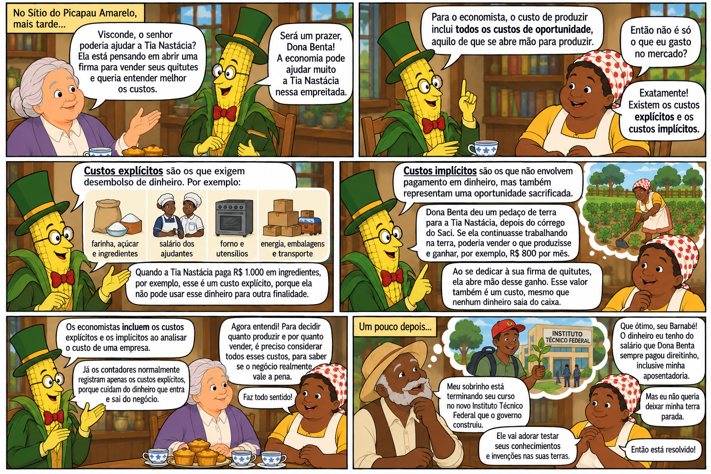
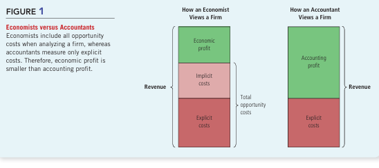
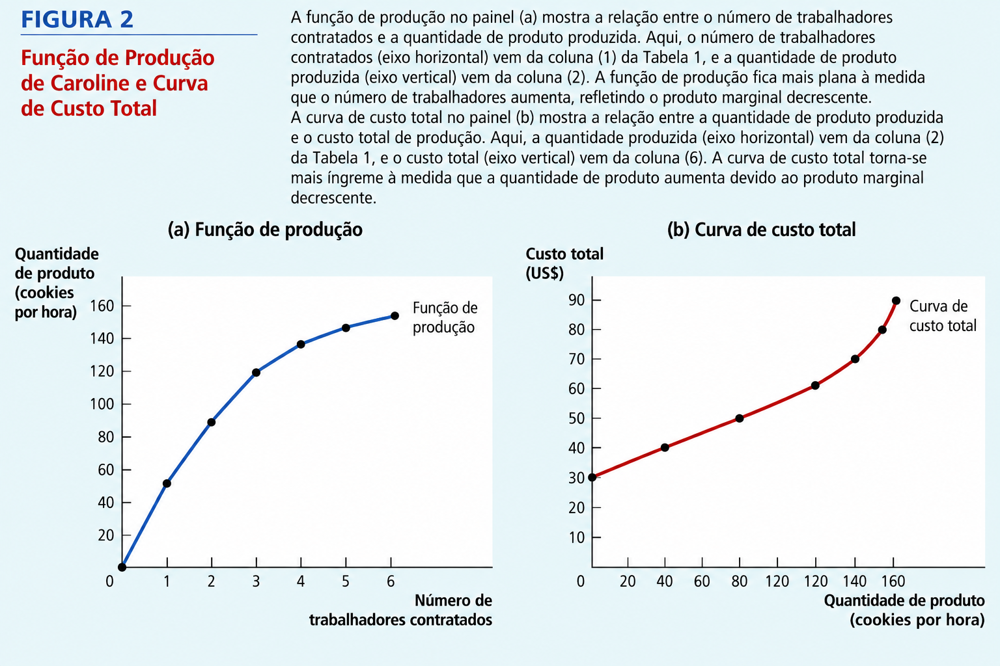
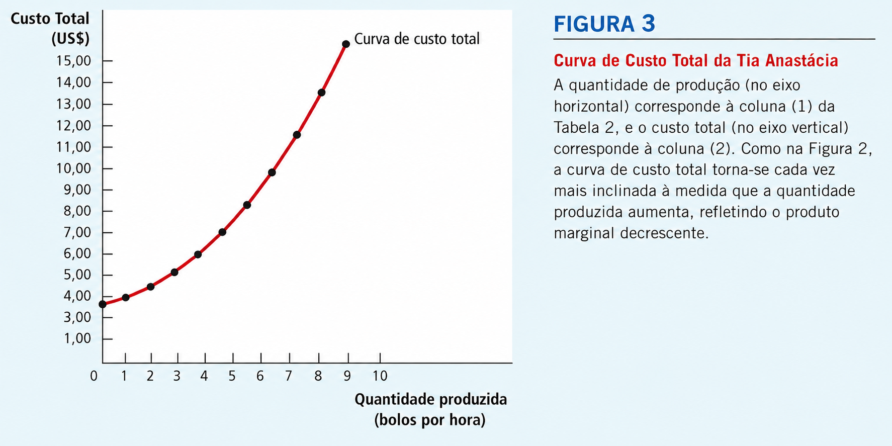
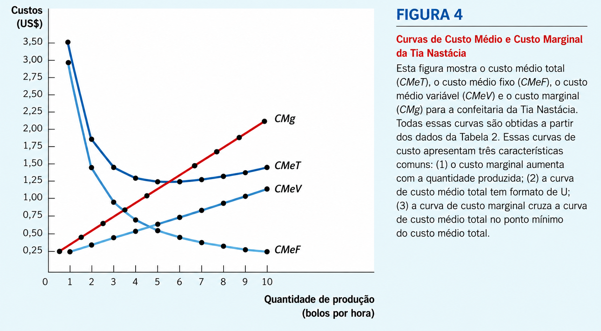
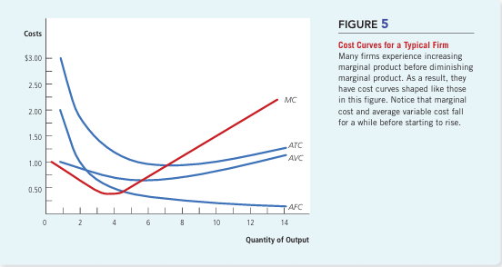
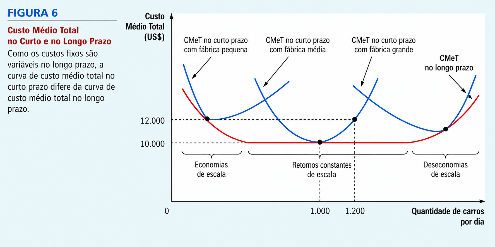

Aula 8 - Custos de Produção
02 — Receita Total, Custo Total e Lucro
03 — Custos como custos de oportunidade
04 — Custo do capital como custo de oportunidade
05 — Lucro econômico versus lucro contábil
08 — Custo total, fixo, variável, médio e marginal
09 - Curva de custos e suas formas
10 — A relação entre curto prazo, longo prazo e o custo médio total
11 — Economias e deseconomias de escala
Até agora, tratamos a curva de oferta como dada:
Preço ↑ → Quantidade ofertada ↑
Mas o que determina quanto uma empresa decide produzir?
A partir de agora, vamos olhar para dentro da firma:
💰 Quanto custa produzir? 🏭 Quanto produzir? 💵 A que preço vender? 📈 Como maximizar o lucro? 🏪 Como essas decisões mudam conforme o mercado?
🔑 O ponto de partida: custos de produção
Os custos são fundamentais para entender as decisões de produção, oferta e preço das empresas.
Este capítulo constrói a base para estudarmos a Organização Industrial:
como o comportamento das firmas depende das condições de mercado.
Para entender as decisões de uma empresa, precisamos começar por uma pergunta:
O que a firma está tentando alcançar?
Na análise econômica, normalmente assumimos que a firma busca maximizar seu lucro.
📊 Receita, custo e lucro
Receita Total (RT)
Valor recebido pela venda dos bens e serviços:
\[ RT = P \times Q \]
Custo Total (CT): Valor dos recursos utilizados para produzir.
Lucro (π): É a diferença entre a receita total e o custo total:
\[ \boxed{\pi = RT - CT} \]
🍪 Exemplo
Se Tia Anastácia produz 10.000 bolinhos e vende cada um por $2:
\[ RT = 10.000 \times 2 = \$20.000 \]
Calcular a receita é relativamente simples.
⚠️ Mas medir corretamente o custo econômico de produzir é mais complicado.
➡️ E é justamente aí que começa nossa análise dos custos de produção.

Lembre-se de um dos 10 Princípios da Economia:
O custo de alguma coisa é aquilo de que você abre mão para obtê-la.
Por isso, para o economista, o custo de produção inclui todos os custos de oportunidade envolvidos na atividade da firma.
💵 Custos explícitos
Exigem um desembolso monetário da empresa.
🥣 Ingredientes 👩🍳 Salários dos trabalhadores ⚡ Energia elétrica 🏠 Aluguel 🔥 Equipamentos
Se Tia Nastácia gastar R$ 1.000 em ingredientes, esses R$ 1.000 não poderão ser utilizados para outra finalidade.
⏳ Custos implícitos
Não envolvem pagamento, mas representam oportunidades sacrificadas.
Imagine que Tia Nastácia pudesse trabalhar em outro lugar ganhando:
\[ R\$30/\text{hora} \]
Ao dedicar uma hora à sua firma de quitutes, ela abre mão desses R$ 30.
➡️ Embora nenhum dinheiro saia do caixa, existe um custo de oportunidade de R$ 30.
🧮 Para o economista \[ \boxed{\text{Custo Econômico} = \text{Custos Explícitos}+\text{Custos Implícitos}} \]
Economista: considera explícitos e implícitos. Contador: normalmente registra os custos explícitos, associados aos fluxos monetários.
Isso explica por que uma empresa pode parecer lucrativa contabilmente e, ainda assim, não ser um bom negócio do ponto de vista econômico.
O custo do capital também é um custo de oportunidade
Um dos custos implícitos mais importantes de uma empresa é o custo de oportunidade do dinheiro investido nela.
🏭 Imagine que Tia Nastácia precise de R$ 300.000
Ela usa R$ 300.000 de suas economias para montar a empresa.
Mas esse dinheiro poderia estar aplicado rendendo 5% ao ano:
\[ R\$300.000\times 5\%=\boxed{R\$15.000} \]
Ao investir na empresa, ela abre mão desses R$ 15.000 por ano.
➡️ Não há pagamento ou saída de caixa. ➡️ Mesmo assim, para o economista, os R$ 15.000 são um custo implícito.
🏦 E se parte do dinheiro for emprestada?
Suponha agora:
R$ 100.000 → economias de Tia Nastácia R$ 200.000 → empréstimo bancário a 5%
Temos dois custos:
| Capital | Custo anual | Tipo |
|---|---|---|
| R$ 200.000 emprestados | R$ 10.000 de juros pagos | Explícito |
| R$ 100.000 próprios | R$ 5.000 de juros não recebidos | Implícito |
| Custo econômico do capital | R$ 15.000 | Total |
🧠 Economista × Contador
Contador: vê R$ 10.000 de custo — o dinheiro efetivamente pago ao banco.
Economista: vê R$ 15.000 de custo — porque considera também aquilo de que Tia Nastácia abriu mão.
\[ \boxed{\text{Custo do capital}=10.000+5.000=R\$15.000} \]
💡 Capital próprio não é capital “de graça”.
Ele também possui custo de oportunidade.
Agora podemos voltar ao objetivo da firma:
Maximizar o lucro.
Mas economistas e contadores chegam a valores diferentes de lucro porque medem os custos de maneira diferente.
🧾 Lucro contábil
O contador considera apenas os custos explícitos:
\[ \boxed{\text{Lucro Contábil} = RT - \text{Custos Explícitos}} \]
São os gastos que efetivamente aparecem no caixa da empresa.
🧠 Lucro econômico
O economista considera todos os custos de oportunidade:
\[ \boxed{\text{Lucro Econômico} = RT-(\text{Custos Explícitos}+\text{Custos Implícitos})} \]

Portanto:
\[ \boxed{\text{Lucro Econômico} =\text{Lucro Contábil}-\text{Custos Implícitos}} \]
🍰 A empresa de Tia Nastácia
Imagine que, durante o ano:
| Valor | |
|---|---|
| Receita total | R$ 100.000 |
| Custos explícitos | R$ 60.000 |
| Custos implícitos | R$ 25.000 |
Para o contador:
\[ 100.000-60.000=\boxed{R\$40.000} \]
Para o economista:
\[ 100.000-60.000-25.000=\boxed{R\$15.000} \]
A empresa apresenta R$ 40 mil de lucro contábil, mas apenas R$ 15 mil de lucro econômico.
🔑 Por que o lucro econômico importa?
Se:
\[ \pi_E>0 \]
✅ A firma cobre todos os seus custos de oportunidade e ainda gera um retorno adicional ao proprietário.
Se:
\[ \pi_E=0 \]
⚖️ A firma cobre exatamente todos os custos de oportunidade. Lucro econômico zero não significa que o empresário não ganha nada.
Se:
\[ \pi_E<0 \]
⚠️ A atividade não está cobrindo todos os custos de oportunidade. Se isso persistir, o proprietário terá incentivo para abandonar a atividade e empregar seus recursos em outra alternativa.
💡 É por isso que, para compreender as decisões das firmas, interessa principalmente o lucro econômico, e não apenas o lucro contábil.
O fazendeiro McDonald dá aulas de banjo por $20 a hora. Certo dia, ele passa 10 horas plantando $100 em sementes em sua fazenda.
Qual foi o custo de oportunidade incorrido por McDonald?
Qual custo seria contabilizado por seu contador?
Se essas sementes produzirem uma colheita no valor de $200, McDonald terá lucro contábil? E terá lucro econômico?
Agora queremos entender como os insumos utilizados pela firma determinam quanto ela consegue produzir.
🍪 A função de produção
Suponha que Tia Nastácia comece a contratar trabalhadores para sua fábrica de quitutes.
A função de produção mostra a relação entre a quantidade de insumos utilizada e a quantidade produzida:
\[ \boxed{\text{Insumos} \longrightarrow \text{Produção}} \]
Neste exemplo, variaremos apenas o trabalho, mantendo os demais fatores de produção constantes.
| Trabalhadores | Produção (unidades/hora) |
|---|---|
| 0 | 0 |
| 1 | 50 |
| 2 | 90 |
| 3 | 120 |
| 4 | 140 |
| 5 | 150 |
| 6 | 155 |
👷 Produto marginal do trabalho
Lembre-se de outro dos 10 Princípios da Economia:
Pessoas racionais pensam na margem.
O Produto Marginal do Trabalho (PMgL) mede quanto a produção aumenta quando contratamos um trabalhador adicional:
\[ \boxed{PMg_L=\frac{\Delta Q}{\Delta L}} \]
Por exemplo, com a contratação do segundo trabalhador:
\[ PMg_L=90-50=\boxed{40} \]
O segundo trabalhador acrescenta 40 unidades por hora à produção.
| Trabalhador adicional | Produção | PMgL |
|---|---|---|
| 1º | 50 | 50 |
| 2º | 90 | 40 |
| 3º | 120 | 30 |
| 4º | 140 | 20 |
| 5º | 150 | 10 |
| 6º | 155 | 5 |
Observe o padrão:
\[ 50\rightarrow40\rightarrow30\rightarrow20\rightarrow10\rightarrow5 \] 📉 Produto marginal decrescente
À medida que mais trabalhadores são contratados, cada trabalhador adicional acrescenta menos à produção.
Esse fenômeno é chamado de:
\[ \boxed{\text{Produto Marginal Decrescente}} \]
Por quê?
Imagine a cozinha de Tia Nastácia. 👩🏾🍳
Com poucos trabalhadores, há espaço, forno e utensílios suficientes. Conforme mais pessoas entram na mesma cozinha, elas precisam dividir os equipamentos, disputar espaço e acabam até atrapalhando umas às outras.
➡️ O capital permanece fixo, enquanto aumentamos o trabalho.
Por isso:
\[ L\uparrow \quad\Rightarrow\quad PMg_L\downarrow \]
📈 E o formato da função de produção?
A inclinação da função de produção representa o produto marginal.
Assim, quando o PMgL diminui:
\[ \boxed{\text{a função de produção vai ficando mais plana}} \]
Esse resultado será fundamental para entendermos, logo adiante, por que a curva de custo fica cada vez mais inclinada à medida que a produção aumenta.
Agora podemos ligar a função de produção aos custos da firma.
Suponha que a empresa tenha:
🏭 Custo da fábrica: $30 por hora 👷 Custo de cada trabalhador: $10 por hora
Assim:
\[ \boxed{CT = 30 + 10L} \]
Se contratar 1 trabalhador:
\[ CT=30+10=\$40 \]
Com 2 trabalhadores:
\[ CT=30+20=\$50 \]
E assim por diante.
| Trabalhadores | Produção | Custo da fábrica | Custo dos trabalhadores | Custo total |
|---|---|---|---|---|
| 0 | 0 | $30 | $0 | $30 |
| 1 | 50 | $30 | $10 | $40 |
| 2 | 90 | $30 | $20 | $50 |
| 3 | 120 | $30 | $30 | $60 |
| 4 | 140 | $30 | $40 | $70 |
| 5 | 150 | $30 | $50 | $80 |
| 6 | 155 | $30 | $60 | $90 |
🪙 As duas faces da mesma moeda
A função de produção e a curva de custo total contam a mesma história, mas de perspectivas diferentes.
Função de produção:
\[ \text{Trabalho} \longrightarrow \text{Produção} \]
Curva de custo total:
\[ \text{Produção} \longrightarrow \text{Custo} \]
Quando há poucos trabalhadores, contratar mais um aumenta bastante a produção.
Mas, com a cozinha cada vez mais cheia:
\[ PMg_L\downarrow \]
Cada trabalhador adicional produz menos.
Para conseguir produzir mais uma unidade, portanto, a firma precisa empregar cada vez mais trabalho.
\[ \boxed{PMg_L\downarrow \quad\Longrightarrow\quad \text{custo de produzir unidades adicionais}\uparrow} \] 📈 Consequência nos gráficos
Função de produção → fica mais plana porque cada trabalhador acrescenta menos produção.
Curva de custo total → fica mais inclinada porque aumentar a produção exige cada vez mais recursos.
🔑 São duas faces da mesma moeda: o produto marginal decrescente explica tanto o achatamento da função de produção quanto o aumento da inclinação da curva de custo total.

A fazendeira Jones não obtém nenhuma colheita se não plantar sementes. Se plantar:
1 saco de sementes → produz 3 bushels de trigo 2 sacos de sementes → produz 5 bushels 3 sacos de sementes → produz 6 bushels
Cada saco de sementes custa $100, e as sementes são seu único custo.
Com esses dados, represente graficamente a função de produção da fazendeira.
Represente graficamente sua curva de custo total.
Explique o formato das duas curvas e sua relação.
As diferentes medidas de custo
O Custo Total (CT) pode ser dividido em:
\[ \boxed{CT = CF + CV} \] 🏢 Custo Fixo (CF): não varia com a quantidade produzida — existe mesmo quando (Q=0). ☕ Custo Variável (CV): varia conforme a quantidade produzida.
A partir deles, podemos calcular os custos médios:
\[ \boxed{CMeT=\frac{CT}{Q}} \qquad \boxed{CMeF=\frac{CF}{Q}} \qquad \boxed{CMeV=\frac{CV}{Q}} \]
Portanto:
\[ \boxed{CMeT=CMeF+CMeV} \]
E há uma medida especialmente importante para a decisão da firma:
\[ \boxed{CMg=\frac{\Delta CT}{\Delta Q}} \]
Custo Médio Total: quanto custa, em média, cada unidade produzida.
Custo Marginal: quanto o custo total aumenta ao produzir uma unidade adicional.
🔑 Médio olha para o custo da unidade típica; marginal olha para o custo da próxima unidade.
☕ As diferentes medidas de custo
| Produção (Q) | CT | CF | CV | CMeF | CMeV | CMeT | CMg |
|---|---|---|---|---|---|---|---|
| 0 | $3,00 | $3,00 | $0,00 | — | — | — | — |
| 1 | $3,30 | $3,00 | $0,30 | $3,00 | $0,30 | $3,30 | $0,30 |
| 2 | $3,80 | $3,00 | $0,80 | $1,50 | $0,40 | $1,90 | $0,50 |
| 3 | $4,50 | $3,00 | $1,50 | $1,00 | $0,50 | $1,50 | $0,70 |
| 4 | $5,40 | $3,00 | $2,40 | $0,75 | $0,60 | $1,35 | $0,90 |
| 5 | $6,50 | $3,00 | $3,50 | $0,60 | $0,70 | $1,30 | $1,10 |
| 6 | $7,80 | $3,00 | $4,80 | $0,50 | $0,80 | $1,30 | $1,30 |
| 7 | $9,30 | $3,00 | $6,30 | $0,43 | $0,90 | $1,33 | $1,50 |
| 8 | $11,00 | $3,00 | $8,00 | $0,38 | $1,00 | $1,38 | $1,70 |
| 9 | $12,90 | $3,00 | $9,90 | $0,33 | $1,10 | $1,43 | $1,90 |
| 10 | $15,00 | $3,00 | $12,00 | $0,30 | $1,20 | $1,50 | $2,10 |


Assim como as curvas de oferta e demanda nos ajudaram a analisar o comportamento dos mercados, as curvas de custo médio e custo marginal nos ajudam a compreender as decisões das firmas.
As principais curvas são:
CMeT — Custo Médio Total CMeF — Custo Médio Fixo CMeV — Custo Médio Variável CMg — Custo Marginal
🔺 Custo Marginal Crescente
O CMg aumenta à medida que a produção cresce, refletindo o produto marginal decrescente.
Quando a produção é pequena, existem recursos ociosos e um trabalhador adicional acrescenta muito à produção:
\[ PMg_L \text{ alto} \Rightarrow CMg \text{ baixo} \]
Quando a produção é elevada, equipamentos e espaço ficam congestionados:
\[ \boxed{PMg_L\downarrow \Rightarrow CMg\uparrow} \] 🟦 Custo Médio Total em forma de U
Como:
\[ \boxed{CMeT=CMeF+CMeV} \]
o formato do CMeT resulta de duas forças:
📉 CMeF diminui: o custo fixo é dividido entre um número cada vez maior de unidades.
📈 CMeV aumenta: devido ao produto marginal decrescente.
Em níveis baixos de produção, predomina a queda do CMeF, fazendo o CMeT cair. Em níveis elevados, predomina o aumento do CMeV, fazendo o CMeT subir.
\[ \boxed{\text{CMeT tem formato de U}} \]
⚙️ Escala eficiente**
O ponto mínimo da curva de CMeT determina a escala eficiente:
Escala eficiente: quantidade produzida que minimiza o custo médio total.
No exemplo, o CMeT mínimo é de $1,30 por unidade, alcançado com uma produção de 5 ou 6 unidades por hora.
🔑 Três propriedades importantes
CMg aumenta com a quantidade produzida. CMeT possui formato de U. CMg cruza o CMeT no ponto mínimo do CMeT.

Suponha que o custo total da Honda para produzir 4 carros seja $225.000 e que o custo total para produzir 5 carros seja $250.000.
Qual é o custo médio total de produzir 5 carros?
Qual é o custo marginal do quinto carro?
Desenhe as curvas de custo marginal (CMg) e custo médio total (CMeT) de uma firma típica e explique por que elas se cruzam no ponto em que se cruzam.
A classificação entre custos fixos e variáveis depende do horizonte de tempo.
No curto prazo, algumas decisões da firma não podem ser alteradas. Uma montadora, por exemplo, pode contratar mais trabalhadores, mas não consegue construir imediatamente uma nova fábrica.
\[ \boxed{\text{Curto prazo: pelo menos um fator de produção é fixo}} \]
Assim, instalações e equipamentos podem representar custos fixos.
No longo prazo, a firma pode ajustar todos os fatores de produção: ampliar uma fábrica, construir outra ou fechar instalações existentes.
\[ \boxed{\text{Longo prazo: todos os fatores de produção podem ser ajustados}} \]
🏭 Curto prazo × Longo prazo
No curto prazo, a firma está limitada pela capacidade instalada que escolheu anteriormente.
No longo prazo, ela pode escolher o tamanho da planta mais adequado para cada nível de produção.
Por isso:
\[ \boxed{CMeT_{LP}\leq CMeT_{CP}} \]
A curva de CMeT de longo prazo tende a ser mais plana e fica sobre ou abaixo das curvas de curto prazo.
🚗 Exemplo
Suponha que uma montadora queira aumentar sua produção de 1.000 para 1.200 carros por dia.
Curto prazo: precisa utilizar mais intensamente a fábrica existente.
\[ CMeT:\quad \$10.000\rightarrow \$12.000 \]
Longo prazo: pode ampliar a fábrica e ajustar simultaneamente capital e trabalho.
\[ CMeT:\quad \$12.000\rightarrow \$10.000 \]
➡️ A maior flexibilidade do longo prazo permite à firma escolher uma combinação de fatores mais adequada à escala de produção.
💡 Curto e longo prazo não são definidos por um número específico de meses ou anos. Dependem de quanto tempo a firma necessita para ajustar seus fatores de produção.

A curva de Custo Médio Total de Longo Prazo (CMeTLP) mostra como o custo por unidade varia quando a firma altera sua escala de produção.
📉 Economias de escala
Quando o aumento da produção reduz o custo médio:
\[ \boxed{Q\uparrow \Rightarrow CMeT_{LP}\downarrow} \]
O crescimento permite maior especialização dos trabalhadores, melhor utilização de equipamentos e divisão de tarefas.
➡️ Retornos constantes de escala
Quando o custo médio permanece aproximadamente constante:
\[ \boxed{Q\uparrow \Rightarrow CMeT_{LP}\text{ constante}} \] 📈 Deseconomias de escala
Quando o crescimento da produção aumenta o custo médio:
\[ \boxed{Q\uparrow \Rightarrow CMeT_{LP}\uparrow} \]
Em organizações muito grandes, surgem problemas de coordenação, comunicação e gestão.
🔑 Especialização favorece as economias de escala; problemas de coordenação ajudam a explicar as deseconomias de escala.
📌 Estudo de Caso — Adam Smith e a Fábrica de Alfinetes
Em A Riqueza das Nações, Adam Smith utiliza uma fábrica de alfinetes para mostrar como a divisão do trabalho e a especialização podem aumentar enormemente a produtividade.
Em vez de cada trabalhador fabricar sozinho um alfinete inteiro, o processo era dividido em várias tarefas:
1 trabalhador → estica o arame outro → endireita outro → corta outro → faz a ponta outro → prepara e coloca a cabeça outros → fazem o acabamento e a embalagem
Cada trabalhador passa a se especializar em uma pequena parte do processo.
🔨 O resultado
Smith observou que uma fábrica organizada dessa maneira conseguia produzir milhares de alfinetes por trabalhador por dia.
Sem especialização, argumentava ele, um trabalhador isolado provavelmente produziria pouquíssimos alfinetes por dia.
\[ \boxed{ \text{Maior escala} \Rightarrow \text{Divisão do trabalho} \Rightarrow \text{Especialização} \Rightarrow \text{Maior produtividade} \Rightarrow \text{Menor custo médio} } \] 💡 A lição econômica
Uma firma maior pode dividir o processo produtivo em tarefas especializadas que seriam inviáveis em uma produção muito pequena.
É um mecanismo fundamental por trás das:
\[ \boxed{\text{Economias de Escala}} \]
Mas esse processo não continua indefinidamente: depois de certo tamanho, os ganhos de especialização podem ser superados pelas dificuldades de administrar uma organização cada vez maior.
\[ \text{Especialização} \;\xrightarrow{\;CMeT \downarrow\;}\; \text{Economias de escala} \qquad\Big|\qquad \text{Coordenação} \;\xrightarrow{\;CMeT \uparrow\;}\; \text{Deseconomias de escala} \] ← menu
Se a Boeing produz 9 aviões por mês, seu custo total de longo prazo é de $9 milhões. Se produz 10 aviões, o custo total passa para $9,5 milhões.
Ela apresenta economias ou deseconomias de escala?
O objetivo deste capítulo foi desenvolver ferramentas para compreender como as firmas tomam decisões de produção e preços. Vimos o que os economistas entendem por custos e como eles variam conforme a quantidade produzida.
O que aprendemos? \[ \boxed{CT=CF+CV} \] \[ \boxed{CMeT=CMeF+CMeV} \] \[ \boxed{CMg=\frac{\Delta CT}{\Delta Q}} \]
As curvas de custo, sozinhas, não determinam quanto uma firma produzirá. Para isso, precisaremos relacionar custos e receitas.
➡️ É exatamente o que faremos a seguir: usar essas ferramentas para entender as decisões de produção das firmas.
| Conceito | Definição | Fórmula |
|---|---|---|
| Custos explícitos | Exigem desembolso monetário pela firma | — |
| Custos implícitos | Não exigem desembolso, mas representam custos de oportunidade | — |
| Custo fixo (CF) | Não varia com a quantidade produzida | \(CF\) |
| Custo variável (CV) | Varia com a quantidade produzida | \(CV\) |
| Custo total (CT) | Valor de todos os insumos utilizados na produção | \(CT = CF + CV\) |
| Custo médio fixo (CMeF) | Custo fixo por unidade produzida | \(CMeF = \frac{CF}{Q}\) |
| Custo médio variável (CMeV) | Custo variável por unidade produzida | \(CMeV = \frac{CV}{Q}\) |
| Custo médio total (CMeT) | Custo total por unidade produzida | \(CMeT = \frac{CT}{Q}\) |
| Custo marginal (CMg) | Aumento do custo decorrente de uma unidade adicional produzida | \(CMg = \frac{\Delta CT}{\Delta Q}\) |
Questões de Concurso
1. CEBRASPE — FUB — Economista — 2018
Em um processo produtivo, se existir produto marginal decrescente em relação a um insumo, então os retornos de escala serão decrescentes.
( ) Certo ( ) Errado
Gabarito: Errado.
A lei dos rendimentos marginais decrescentes trata do curto prazo, mantendo pelo menos um fator fixo. Retornos de escala analisam o que ocorre quando todos os fatores variam, portanto são conceitos diferentes.
2. CEBRASPE — TCE-RO — Auditor de Controle Externo/Economia — 2013
Empresas com rendimentos marginais decrescentes terão os custos marginais aumentados à medida que o produto aumenta.
( ) Certo ( ) Errado
A questão consta da prova oficial do TCE-RO.
Gabarito: Certo.
É exatamente a relação que trabalhamos:
\[ PMg\downarrow\quad\Rightarrow\quad CMg\uparrow \]
3. CEBRASPE — TCE-RO — Auditor de Controle Externo/Economia — 2013
Segundo a lei do produto marginal decrescente, o produto marginal diminui à medida que se utiliza no longo prazo mais e mais dos fatores de produção envolvidos.
( ) Certo ( ) Errado
Gabarito: Errado.
A pegadinha está em “no longo prazo”. Produto marginal decrescente é analisado aumentando um fator enquanto os demais permanecem fixos.
4. ESAF — CGU — Analista de Finanças e Controle — 2008
Um projeto de investimento apresenta economias de escala quando:
Gabarito: E.
\[ \boxed{Q\uparrow\quad\text{e}\quad CMeT_{LP}\downarrow \Rightarrow \text{Economias de escala}} \]
5. VUNESP — MPE-ES — Economista — 2013
Economias de escala ocorrem quando a firma é capaz, por exemplo, de duplicar sua produção:
Gabarito: D.